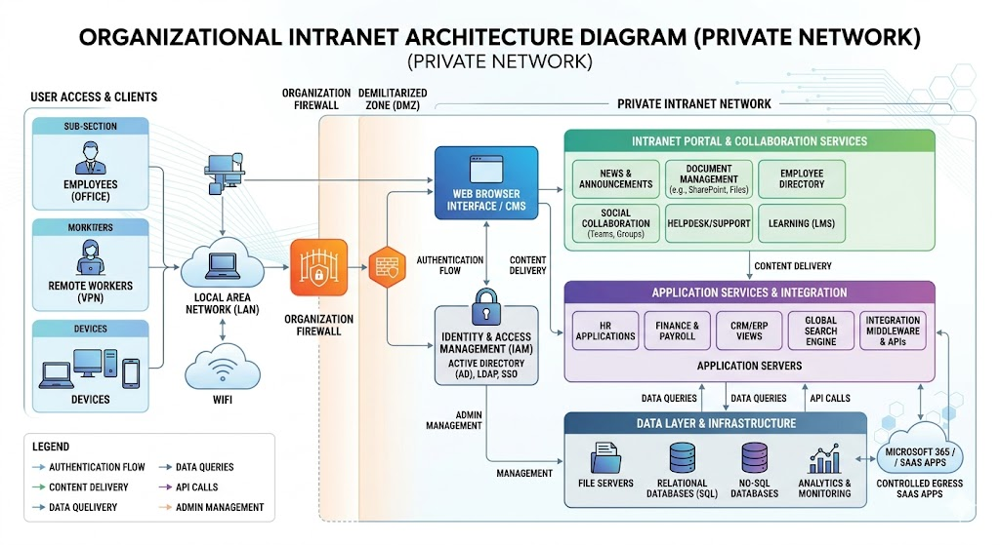

An intranet is a private, internal network that uses Internet technologies (HTTP, HTML, TCP/IP) but is accessible only to an organization's employees or members. It functions like a private mini-Internet, restricted to users within the organization.
Intranets are designed to facilitate communication, collaboration, and information sharing among employees. They often include features such as internal websites, document repositories, employee directories, messaging systems, and collaboration tools.
Characteristics and Uses
- • Accessible only from within the organization's network or via authenticated VPN
- • Used for internal communication, document sharing, HR portals, and collaboration
- • Secured by firewalls, authentication systems, and access controls
- • Follows the same web technologies (HTTP, HTML, databases) as the public Internet
Intranet Architecture Diagram
